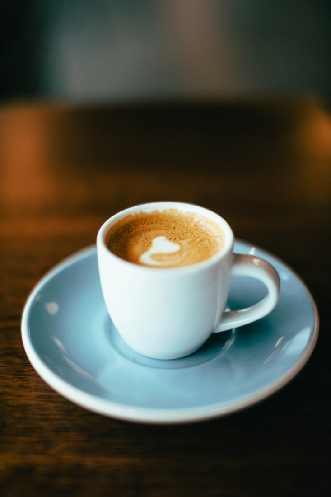
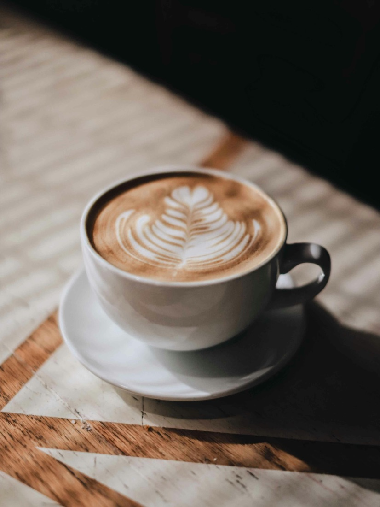
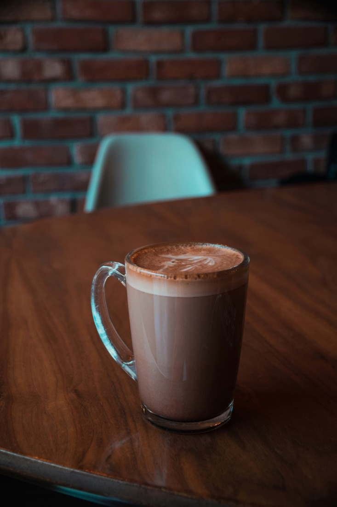
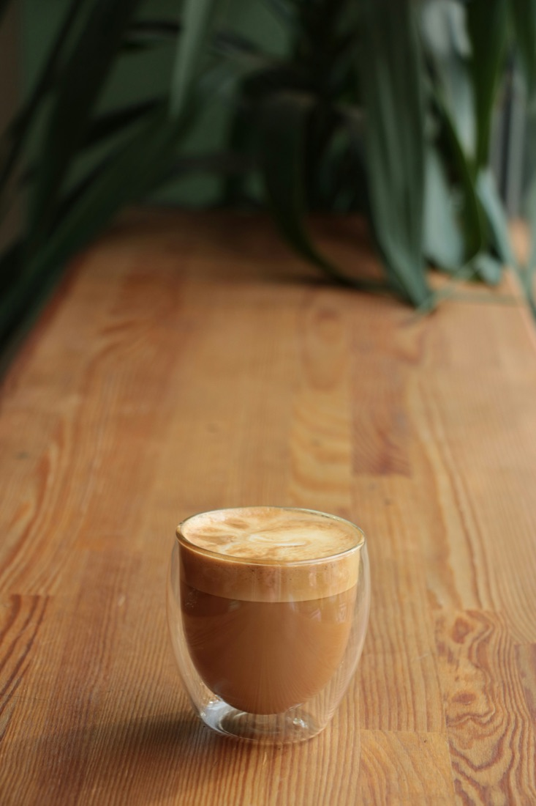

Sweet + complex
Often fruity, floral, chocolatey. Typically higher acidity and aroma.
- Common at higher altitudes
- More delicate plant
- Often “specialty coffee” focused
Coffee 101
Scroll for beans, drinks, and brewing basics. Then try the Brew Your Own mini game to see what drink your recipe matches.
Most coffee comes from two species. Where it’s grown + how it’s processed shapes flavor.
Often fruity, floral, chocolatey. Typically higher acidity and aroma.
More bitter, heavier body, great crema—often used in espresso blends.
Six classics — what they are and what sets them apart.

Pure. Intense. Essential.
Hot water forced through finely-ground coffee under pressure. The foundation every café drink is built on.
Espresso, opened up.
Espresso diluted with hot water — lighter body, same bold character and depth.

Silky. Mellow. Familiar.
Espresso with generous steamed milk and a thin foam cap. Smooth and approachable.
Foam, flavor, balance.
Equal thirds espresso, steamed milk, and thick foam. Bolder and airier than a latte.

Coffee meets chocolate.
Espresso and steamed milk enriched with chocolate syrup. Dessert in a cup.

Espresso, just marked.
A shot of espresso with just a small dollop of foam. Bold and unapologetically strong.
Great coffee is mostly: grind size, ratio, water temp, and time. Change one variable at a time.
Quick words you’ll see on bags and menus.
How much flavor you pull out of the grounds. Sour = under, bitter = over.
Mouthfeel. Light/tea-like vs heavy/syrupy.
The foamy top on espresso—emulsified oils + gases.
In pour-over, the first pour that releases CO₂ (helps even extraction).